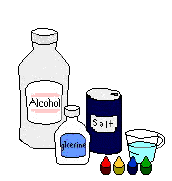
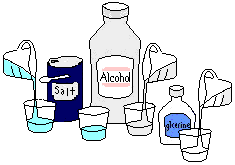
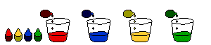
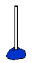
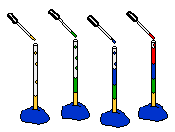

| |
Liquid Layers |
Do oil and water mix?
Oil and water have different densities. Oil floats on water because it is less dense than water. A liquid that floats is lighter or less dense than a heavier or more dense liquid that sinks.
Try the experiment below and explore different densities.

Plastic cups (4)
Clear straw
Plasticine clay
Eye dropper
Rubbing Alcohol
Salt
Glycerin
Water
Food Coloring (4 colors)
Measuring cup
Tablespoon
 1. Put in cups:
 2. Make each cup a different color.

3. Push straw into clay.

Experiment: Can you get the liquids to float on top of each other so that you see four different colors?Hint: Each liquid has a different density.

|
Why do you have to shake salad dressing? How can you make an ice cube sink? How does temperature affect a liquid's density? |
|
|
|
|
|
|
|
|
 Gathered by topic |
 Connected together |
 Index of ideas |
 Search |
 Density dessert
Density dessert